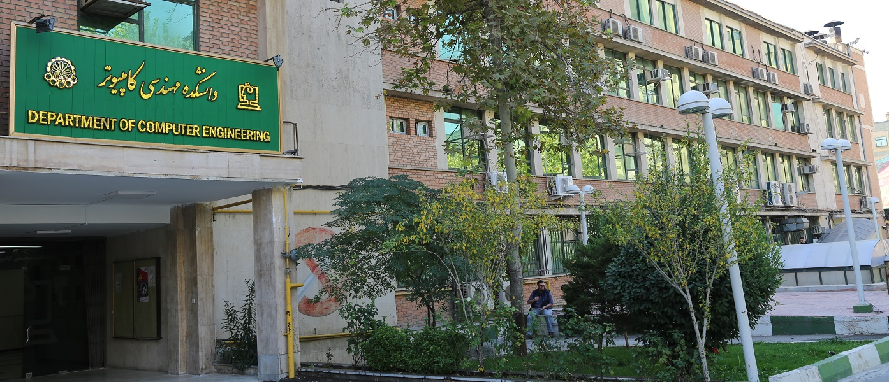

About Me
Hi, I'm Zahra!
I'm 4th year of computer engineering at Amirkabir university of Tehran.
I have a deep interest in the fields of machine learning and artificial intelligence, driven by their potential to transform industries and solve complex real-world problems.
During my Bachelor of Computer Engineering studies, I have actively pursued coursework and projects focused on these areas, gaining both theoretical knowledge and practical experience.
In machine learning, I have explored fundamental concepts such as supervised and unsupervised learning, decision trees.
I have worked with datasets to build predictive models, focusing on improving accuracy and addressing challenges such as overfitting and data imbalance.
My practical experience includes using tools such as scikit-learn and pandas to preprocess data and develop models .
I am eager to deepen my expertise and contribute to interesting projects.
